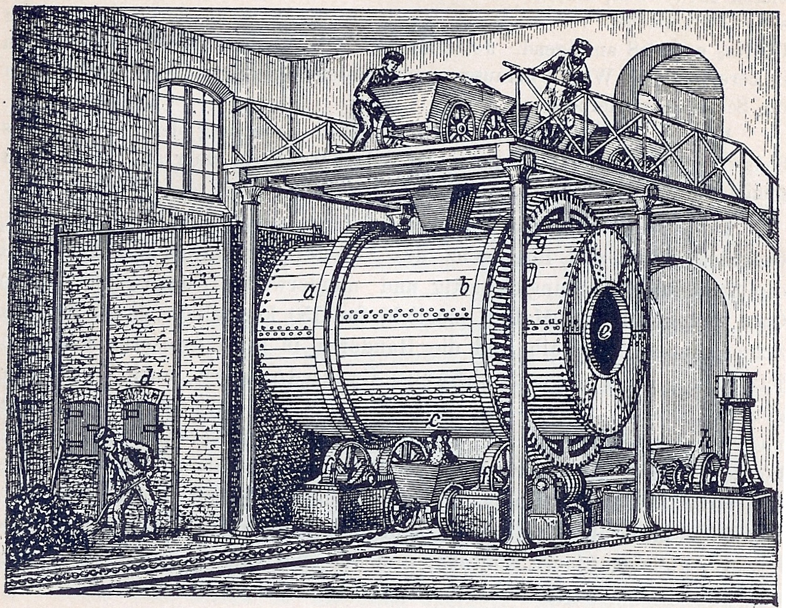

|
Durante la Rivoluzione Industriale, l'industria chimica ha svolto un ruolo significativo nello sviluppo dell'economia e della tecnologia.
La Rivoluzione Industriale ha visto importanti progressi nel campo della chimica industriale. Nuovi processi chimici sono stati sviluppati per la produzione di sostanze chimiche, come il processo Leblanc per la produzione di soda caustica e carbonato di sodio.
Ha conosciuto un'espansione significativa durante questo periodo. La produzione di sostanze chimiche come acidi, basi, coloranti, fertilizzanti e esplosivi è cresciuta in modo esponenziale per soddisfare la domanda delle industrie manifatturiere emergenti.
Ha svolto un ruolo chiave nell'innovazione tecnologica durante la Rivoluzione Industriale. Nuove sostanze chimiche hanno permesso lo sviluppo di nuovi materiali, processi di produzione più efficienti e prodotti innovativi.
L'espansione dell'industria chimica ha avuto un impatto significativo sull'ambiente e sulla salute umana. Le fabbriche chimiche spesso producevano inquinamento atmosferico e idrico, e i lavoratori erano esposti a sostanze chimiche pericolose senza adeguati standard di sicurezza sul lavoro.
Ha contribuito allo sviluppo di farmaci e medicinali durante la Rivoluzione Industriale. Nuove scoperte chimiche hanno portato alla sintesi di farmaci importanti per il trattamento di malattie e condizioni mediche.

|
|